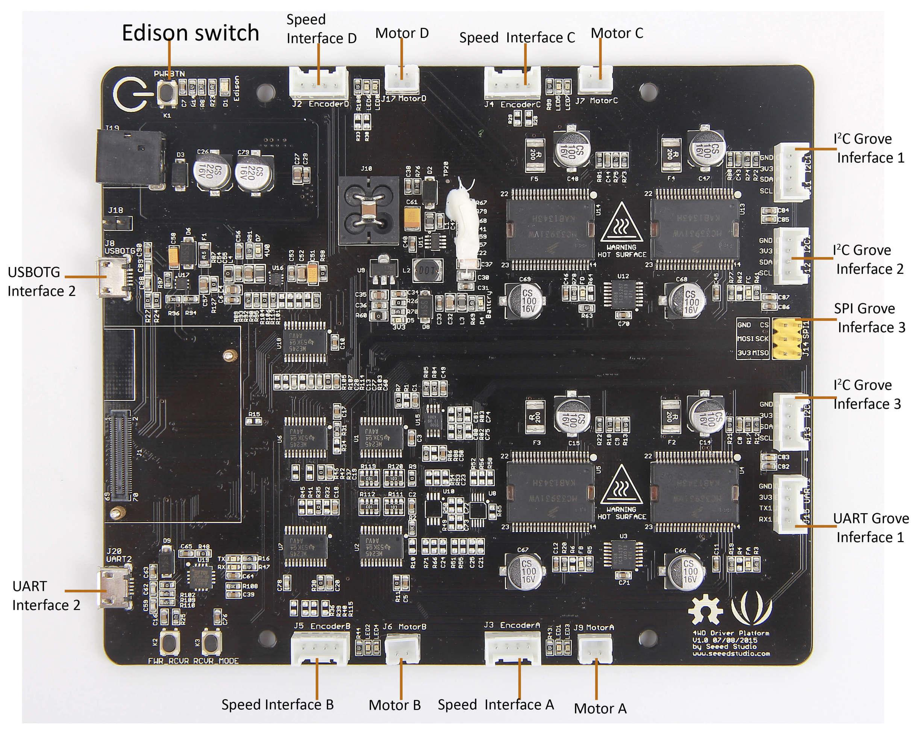

4WD Driver Platform V1.0 (No Intel Edison chip included) is a motor driver board which support 4-wheel driving with bidirectional and full control to each motor. The most important features of this drive board is it expandability achieved by grove interfaces which can enable your project more versatile. It also get detailed and simple SDK (software development kit) which will make you development process quicker and easier. With Edison installed, you can build a powerful system to satisfy your different needs.

| Basic parameters | |
| Input voltage | 6-16V |
| Output voltage | 5V/4V/3.3V/1.8V |
| Idle Current | Less than150mA |
| Dimensions | 130*110mm |
| Motor Driver | |
| Driver chip | MC33931(Freescale) * 4, independent |
| Input voltage | 5-30V |
| Output current | 3A(MAX) |
| Protection | Auto-cutting output for over temperature, low-voltage and short circuit occurrences |
| Expandability | |
| I2C interface | 3 |
| SPI interface | 1 |
| UART interface | 2 |
| USB OTG interface | 1 |

Note that only 3.3 V voltage is valid to apply on ALL motor interfaces and grove modules.
Note that this section only shows you how to build basic development environment. You can build a development environment for your project with following guides:
Rule of thumb: We recommend you only select drivers and flash tool to be installed for the first if you connection speed to Intel server is not fast enough. Downloading other tools separately will be much quicker.
Note that 4WD Driver Platform V1.0 is not supported for Windows 10 at the moment.
Download a putty for serical communication
putty configurations
putty login
Note that no password exist if it is the first time you use you Edison chip.
Note that you can flash the latest firmware image to Edison with Intel Flash Tool.
Note that this section will show you a demo which implemented some simple functions.
Note that make sure you have built a development environment successful by former sections and we assume you have got basic knowledge for Arduino platform.
You can refer to Edison 4WD Auto Robotic Platform 2.0 for a practical application with 4WD Driver Platform V1.0.